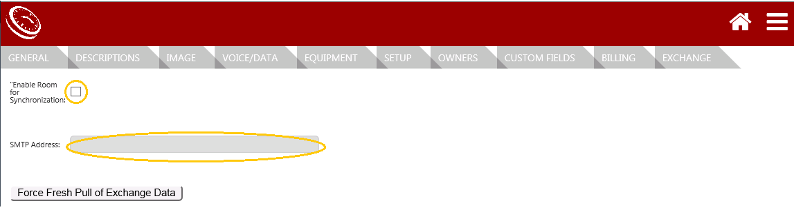

Customize Room Sign Environment - Administrator
The designated Administrator can modify the MeetingPlanner Room Sign environment. To access the Room Sign application and make setting modifications the following is needed:
- A user profile with Administrator rights.
- The Room Signs URL (e.g., http://<yourserver>/suite>Room Signs).
Access Room Sign Settings
Use the Menu navigation icon and dropdown menu from the top right corner of the Room Sign homepage to access the settings and customize the MP Room Sign environment to fit the needs of your organization.
Customize Building Name
(Hierarchy>Locations&Rooms>Edit iconbuilding>General)
NOTE: A building and room migration template is available for large environments. Please open a support portal ticket to request a template and script for import if necessary.
- Select the Edit icon next to the building to modify.
- Make modifications to fields. Building Name, Floor Name (alpha/ie. main), Physical Level.
- Select Save.
Add Room Details
NOTE: Typically organizations modify the Room Sign environment that defaults upon installation. Although, a building and room migration template is available for large environments. Please open a support portal ticket to request a template and script for import if necessary.
General
(Hierarchy>Locations&Rooms> Edit>General)
- Select the Edit icon next to the room to modify.
- Select the Building dropdown field and select the building that houses the room. (Required)
- Use the Floor dropdown menu and select the building level at which the room will be located.
- The Room Name to correlate with your organization should be entered. See Locations & Rooms. (Required)
- Enter the lowest and highest number of attendees in the Capacity fields. (Optional) Capacity information is displayed from the reservation page.
- Select Save.
Description
(Hierarchy>Locations&Rooms>Edit room>Descriptions)
- Select Descriptions.
- Use the General Description text box to include information to be displayed from the reservation page. (Optional)
- Select Save.
Add a Building or a Room
Additional buildings and rooms can be added to the Room Sign environment.
NOTE: Typically organizations manually enter additional buildings and rooms to the Room Sign environment when necessary. Although, a building and room migration template is available for large environments. Please open a support portal ticket to request a template and script for import if necessary.
- Go to Hierarchy>Locations&Rooms>+Building/+Room.
- Select New Building/New Room.
General
- Select General.
- Enter building name, room name, and capacity.
Description (room only)
- Enter Description.
- Use the General Description text box to include information to be displayed from the reservation page. (Optional)
Exchange (room only)
(Hierarchy>Locations&Rooms>Exchange)
- Select Exchange.
- Enable Room for Synchronization.
- Enter the SMTP Address.
- Select Save.

IMPORTANT: Make sure to enable room for synchronization and enter SMTP Address for each room added.
Room Sign Interface Configuration
(Application>Sign Configuration)
Configure the Room Sign and Software settings below when connecting to Room Signs via Exchange.
Global Settings
- Select Exchange from the Backend Connection field dropdown.
- Select the desired form of user Authentication from the dropdown field.
- Enter the desired Default Subject. The default subject will populate when a user reserves a room. The end user can edit the subject when creating a reservation.
- Enter the desired Help Message. This message will appear when a user selects the requests help icon.
IMPORTANT: The Help Message and Request Icon will ONLY appear in rooms in which a help email address has been entered in the Custom Field Value field.
Theme
Logo
- Select Choose File to upload a ‘Logo’ image. Use PNG file.
Available Room
- Select the Available Room field and choose a color to display when a room is available.
- Choose File to upload an ‘Available Room’ image. Image display overrides color selection. In other words, if both color and image are selected, ONLY the image will display.
- Clear Image to remove the ‘Available Room’ image.
In Progress Meeting
- Select the In Progress Meeting field and choose a color to display when a room is being used.
- Choose File to upload an ‘In Progress Meeting’ image. Image display overrides color selection. In other words, if both color and image are selected, ONLY the image will display.
- Clear Image to remove the ‘In Progress Meeting’ image.
Future Meetings (user has not checked-in)
- Select the Future Meetings field and choose a color to display a reservation in the future.
- Choose File to upload a ‘Future Meeting’ image. Image display overrides color selection. In other words, if both color and image are selected, ONLY the image will display.
- Clear Image to remove the ‘Future Meeting’ image.
Reservation Editor
- Select the Reservation Editor field and choose a color to display from the reservation editor page.
- Choose File to upload a ‘Reservation Editor’ image. Image display overrides color selection. In other words, if both color and image are selected, ONLY the image will display.
- Clear Image to remove the ‘Reservation Editor’ image.
Check In/Out
- Enable Check In/Out field to allow a user to check in or out of a meeting using MeetingPlanner Room Signs and Software.
- Enter the minutes allowed before the meeting in which a user is able to check in.
- Enter the minutes allowed after the meeting has ended in which a user is able to check out.
- Select Save.
Override Global Settings in Identified Rooms
Rooms that require settings other than the global settings entered above can be changed from the ‘Custom Field’ page of the identified room.
Custom Fields
(Hierarchy>Locations&Rooms>Edit room>Custom Fields)
Settings that can be customized, by room, include:
- Check-in After Window (enter field value in minutes)
- Check-in Before Window (enter field value in minutes)
- Check-in Enabled (enter 1 true or 2 false)
- Default Subject (enter subject [e.g., Staff Meeting] in field value)
- Free Color (enter HEX color)
- Help Email Address in Custom Field Value (enter helpdesk email [e.g., john.doe@gmail.com] in field value)
- Help Message (the message entered in field value will appear from the Room Sign reservation window once the the Request Help icon is selected)
- Future Color (enter HEX color)
- In Progress Meeting Color (enter HEX color)
To modify the custom field settings room by room:
- Select Custom Fields.
- Select Edit/Delete next to the setting to be modified.
- Enter the new Custom Field Value.
- Select Update and Save.